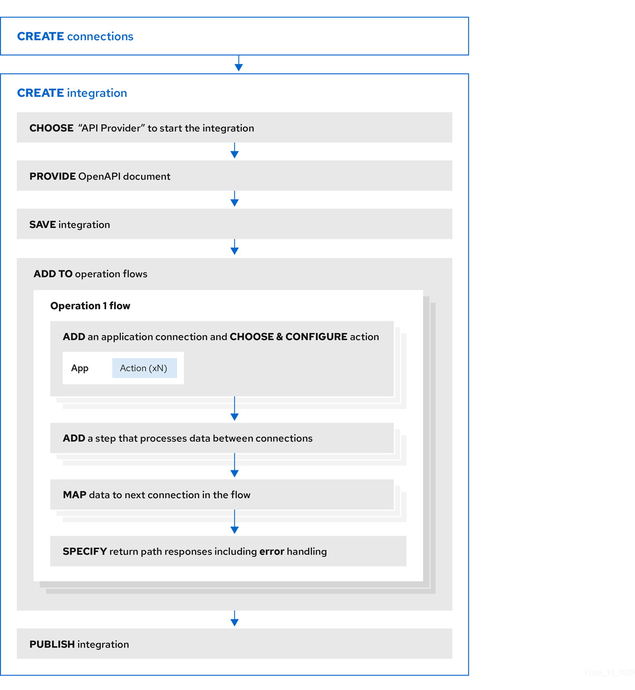

Benefit, overview, and workflow for creating API provider integrations
An API provider integration starts with a REST API service. This REST API service is defined by an OpenAPI 3 (or 2) document that you provide when you create an API provider integration. After you publish an API provider integration, {prodname} deploys the REST API service on OpenShift. The benefit of an API provider integration is that REST API clients can invoke calls that trigger execution of the integration.
An API provider integration has multiple execution paths, referred to as flows. Each operation that the OpenAPI document defines has its own flow. In {prodname}, for each operation that the OpenAPI document defines, you add connections and other steps to the execution flow for that operation. These steps process the data as required for the particular operation.
For example, consider a human resources application that calls a REST API service that {prodname} has made available. Suppose the call invokes the operation that adds a new employee. The operation flow that handles this call could:
-
Connect to an application that creates an expense report for new employee equipment.
-
Connect to a SQL database to add an internal ticket for setting up new equipment.
-
Connect to Google mail to send a message to the new employee that provides orientation information.
There are many ways to call the REST APIs that trigger integration execution, including:
-
A web browser page that takes data input and generates the call.
-
An application that explicitly calls the REST APIs, such as the
curlutility. -
Other APIs that call the REST API, for example, a webhook.
For each operation, you can edit its flow by:
-
Adding connections to the applications that need to process the data.
-
Adding steps between connections, including split, aggregate, and data mapping steps.
-
Mapping connection error messages to return codes in the HTTP response that finishes the flow. The response goes to the application that invoked the call that triggered execution of the integration.
The general workflow for creating an API provider integration is shown in the following diagram:

After you publish an API provider integration, in the integration’s summary page, {prodname} displays the external URL for your REST API service. This external URL is the base URL that clients use to call your REST API services.
For {prodname} environments on OCP, Red Hat 3scale discovery of API provider integrations might be enabled. In this case, 3scale publishes the URL for invoking services.
To test an API provider integration’s flows, you can use the curl utility.
For example, the following curl command triggers execution of the
flow for the Get Task by ID operation for the REST API service URL: https://i-task-api-proj319352.6a63.fuse-ignite.openshiftapps.com/api/.
The HTTP GET command is the
default request so there is no requirement to specify GET.
The last part of the URL specifies the ID of the task to get:
curl -k https://i-task-api-proj319352.6a63.fuse-ignite.openshiftapps.com/api/todo/1